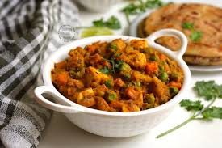

Mix Veg is a popular North Indian curry made with a blend of seasonal vegetables cooked in a spiced, onion-tomato gravy
It typically includes carrots, beans, peas, cauliflower, capsicum, and potatoes, often paired with paneer, and is best served with roti, paratha, or steamed rice.